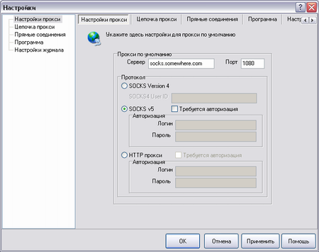

|
Итак, профиль создан. Теперь нам осталось настроить наш прокси, через который будет ходить выбранная программа.
Для этого Вам необходимо узнать (к примеру посмотрев список проксей на сайте www.socksproxy.de) четыре вещи: адрес прокси, его порт, тип, логин и пароль.
|
| адрес прокси | IP или доменное имя прокси |
| порт | порт на котором прокси работает |
| тип | SOCKSv4, SOCKSv5 или HTTP(S) прокси |
| логин/пароль | Если прокси необходим авторизованный доступ |
|
Открываем меню Файл->Настройки и попадаем на первую вкладку "SOCKS"

Чтобы добавить новый прокси в список вы должны сделать следующее:
|
| 1 | Вписать адрес прокси и его порт в соотвествующие поля. |
| 2 | Выбрать тип прокси, щелкнув мышкой в соотвествующей группе |
| 3 | Если прокси необходима авторизация -- поставить флажок "Требуется авторизация" и вписать логин и пароль в соотвествующие поля |
| 4 | Нажать кнопку "Применить" |
|
|
Пожалуйста учтите что: если вы прописываете HTTP-прокси будьте уверены что она поддерживает т.н.
CONNECT. Наиболее типичная ошибка пользователей -- прописать свой корпоративный
кэширующий прокси. Подробнее об этом смотрите в FAQ
|
| В большинстве случаев Вам понадобится только один прокси, так что этот этап настройки можно считать завершенным.
Если вы хотите задействовать механизм цепочки серверов откройте вкладку "Цепочка прокси".
|